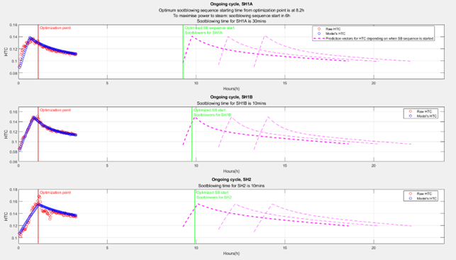

FouCon is a component for active control/prescriptive maintenance of process, derived based on the needs from the WP3 fouling control pilot problem. Potential specific problems include soot blowing automation and prescriptive maintenance actions.
The component includes data-driven modeling tool for predicting the impact of fouling and soot blowing on heat exchange performance, and optimization algorithm to determine how the system should be operated. The identified model is used to compute the optimal soot blowing interval for selected set of heat exchangers. The physical modeling (from FouMon) is replaced by novel data-driven tools based on the Prony approach. The optimal intervals for soot blowing actions are derived using mixed-integer programming (MIP/sb). The cognitive learning aspects are emphasized by on-line model parameter update and support of human decision making.
The applied data-driven modeling tool separates the effect of plant load level from fouling estimation. The Prony approach in model identification is closely related to other subspace identification methods, resulting in an LTI model of the system. This method enables discarding undesired/unstable modes from the identification results. It is also computationally light, and identification is performed on-line. Model update always takes the most recent measurement data into consideration when creating the model. Therefore, the application is inherently capable of adjusting to changes in the process.
The identified LTI-model is used as a basis for soot blowing optimization. The cost function is constructed from gains (improved heat transfer) and losses (steam consumed in soot blowing) so that total power from fuel to steam is maximized. Interactions between individual heat exchangers are also considered in the formulation of the cost function. The optimization problem is solved using Matlab’s built-in mixed integer programming -tool. As a result from optimization, MIP/sb provides a suggestion of the optimal starting time of soot blowing sequence to operator.
The Prony tool is application independent and can be used in various modeling problems. The MIP/sb tool is problem spesific, and provides a solution for the sootblowing operational optimization problem at the pilot site. It is expected that the same principles can be applied at other installations.
The FouCon component originates from solving the WP3 pilot problem on boiler fouling management, and has been tuned and tested using real full scale boiler plant design and measurement data (WP3 pilot).
Figure 1. Soot blowing optimization for three consequtive superheaters (SH1A, SH1B and SH2).
The MPI/sb optimization cost function is constructed from the gains and losses associated with a soot blowing sequence (improved heat transfer, steam losses), under constraints (e.g., limited actions). The primary target was set to find the start time and/or length of the sootblowing sequence for individual heat exchangers.
Figure 1 illustrates the approach in simulations on three superheaters. The measured and estimated heat transfer coefficients are displayed, a decrease in HTC indicates fouling of surfaces. The tool provides an optimal sootblowing sequence, and illustrates also the predicted performance (in terms of HTC) if alternative decisions are made.
The physical model and measurements are set up in the Matlab m-files. Input data (measurements) are provided as numerical vectors. Interactive tuning is enabled by Matlab interface/graphics. Estimation outcomes are provided as numerical vectors.
A link with StreamPipes is enabled by an OPC-UA client/server component (see FUSE OPC-UA tool).
The tool is implemented using Matlab language (m-files). Matlab from the Mathworks is required (FouCon has been tested on Matlab 2020b).
Matlab (2020b) is available on all major operating systems, including Windows 7, Ubuntu 16, Debian 9, MacOS 10 and newer. No particular Matlab Toolboxes are required. Open software Octave is known to be able to interpret m-files, but FouCon-codes have not been tested with Octave.
The Prony-tool is free for use (contact Markus.Neuvonen@oulu.fi). The CFB boiler design data and plant measurement data are Sumitomo and pilot proprietary.
TRL 5 (demonstrated in a relevant environment).
Neuvonen, M., I. Selek, E. Ikonen and L. Aho. Heat exchanger fouling estimation for combustion–thermal power plants including load level dynamics. IEEE International Conference on Systems, Man, and Cybernetics, 9–12 Oct 2022, Prague.
Aho, L. Mallipohjainen on-line estimaattori polttovoimalan lämmönvaihtimien likaantumiselle (Model-based on-line estimator for combustion plant heat exchanger fouling, in Finnish). 2022. University of Oulu, Master’s Thesis.
The Prony-tool is available for download.